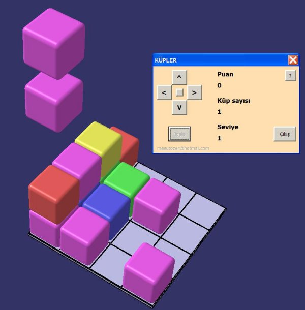

|
Sub'lar
içinde yer alan kod satýrlarýný kýsaca inceleyelim:
UserForm_Initialize
sub'ý içindeki kodlar
On Error
Resume Next
Set catia = GetObject(, "CATIA.Application")
If Err.Number <> 0 Then
MsgBox "Programdan önce CATIA programýný çalýþtýrmalýsýnýz.",
vbCritical, "HATA"
End
End If
Bu kod satýrlarý, CATIA'nýn arka planda çalýþýp çalýþmadýðýný
kontrol etmektedir. Eðer CATIA çalýþmýyorsa, makro ekrana
bir uyarý mesajý getirerek sonlanýr.
If catia.ActiveDocument
Is Nothing Then
MsgBox "Açýk döküman yok", vbCritical, "HATA"
End
End If
Bu kod satýrlarý CATIA'da açýk bir doküman olup olmadýðýný
kontrol eder. Eðer yoksa macro ekrana bir hata mesajý getirerek
sonlanýr.
CommandButton1_Click
sub'ý içindeki kodlar
Set secim
= catia.ActiveDocument.Selection
Set secilen = secim.Item(1)
Bu kod satýrlarý, CATIA'da seçilmiþ olan elemanlarý alýr ve
elemanlarýn birincisini secilen nesnesi içine atar. Böylece
çoklu seçim bile yapýlmýþ olsa her zaman ilk seçilen elemanýn
koordinatlarý forma alýnýr.
ReDim koord(2)
secilen.GetCoordinates koord
Bu
kod satýrlarýnda "koord" isimli bir array oluþturulmakta
ve bu array içine secilen nesnesinin koodinatlarý "GetCoordinates"
metodu ile alýnmaktadýr.
If secilen
Is Nothing Then
TextBox1.Text = "#"
TextBox2.Text = "#"
TextBox3.Text = "#"
TextBox4.Text = "Seçim yok"
Else
TextBox1.Text = Round(koord(0), 3)
TextBox2.Text = Round(koord(1), 3)
TextBox3.Text = Round(koord(2), 3)
TextBox4.Text = secilen.Type
End If
secim.Clear
Bu
kod satýrlarýnda ise alýnan koordinatlar ve seçilen elemanýn
tipi form üzerindeki textbox'lara yazýlmaktadýr. Daha sonra
secim nesnesinin "Clear" metodu çaðrýlarak CATIA
üzerindeki seçimler temizlenir.
CommandButton1_MouseDown
sub'ý içindeki kodlar
If InStr(1,
catia.ActiveDocument.Name, ".CATPart") >= 1 And
Button = 2 Then
Set part_dokuman = catia.ActiveDocument
Set hybrid_bodies = part_dokuman.Part.HybridBodies
Set point_body = hybrid_bodies.Item("NOKTALAR")
If Err.Number <> 0 Then
Set point_body = hybrid_bodies.Add
point_body.Name = "NOKTALAR"
Err.Clear
End If
Bu
kod satýrlarýnda CATIA'da açýk olan dökümanýn CATPart olup
olmadýðý kontrol edilmektedir. Eðer kontrol yapýlmazsa sub
product üzerine nokta atmaya çalýþacaðýndan hata meydana gelecektir.
"HybridBodies" özelliði ile part dökümaný içinde
bulunan tüm Geometrical Set'ler nesneler olarak alýnýr. Bu
nesneler içinde adý "NOKTALAR" olan Geometrical
Set'in varlýðý kontrol edilir. Eðer böyle bir set yoksa oluþturulur
ve bu set "point_body" nesnesi olarak alýnýr. "NOKTALAR"
Geometrical Set'i noktalarýn oluþturulacaðý yerdir.
Set factory
= part_dokuman.Part.HybridShapeFactory
Set secilen = secim.Item(1)
ReDim koord(2)
secilen.GetCoordinates koord
If Not secilen Is Nothing Then
Set nokta = factory.AddNewPointCoord(koord(0), koord(1), koord(2))
point_body.AppendHybridShape nokta
part_dokuman.Part.Update
End If
CommandButton1_Click
Bu
kod satýrlarýnda seçilen noktanýn koordinatlarý alýnmakta
(yukarýda açýklandý) ve bu koordinatlarda noktanýn oluþturulmasý
saðlanmaktadýr. Nokta oluþturulurken bir "factory"
nesnesi alýnmakta (tüm geometrik elemanlar bu factory yardýmýyla
oluþturulur), ve bu nesne ile yeni bir nokta "AddNewPointCoord"
metodu ile oluþturulmaktadýr. Oluþturulan bu nokta "AppendHybridShape"
metodu ile daha önce açýlan "NOKTALAR" Geometrical
Set'i içine dahil edilir. Part'ýmýz "Update" metodu
ile güncellenir. En sonunda da "commandbutton1_click"
sub'ý çaðrýlarak deðerler textbox'lar içine yazýlýr ve seçim
temizlenir.
Yukarýdaki
kodlardan da görüldüðü gibi bir çok CATIA özellikleri ve metotlarý
kodlama sýrasýnda kullanýlmaktýr. Geri kalan kod kýsmý ise
(if, dim, redim vb.) standart VB kodlamasýdýr. Kodlama sýrasýnda
önemli olan, CATIA'ya ait nesnelerin özellik ve metotlarýný
iyi kavranmýþ olmaktýr.
Örnek
bir macro - Küp Oyunu
Ýlgili
dosyalarý indirmek için týklayýnýz: oyun.zip
(250KB)
Bu
oyun CATIA'nin makro kabiliyetleri kullanýlarak oluþturulmuþ
bir oyundur. Bu oyun ortaya çýkan farklý renklerdeki küplerin
tabla üzerine 3'lü þekilde sýralanmasý ile oynanýr.

Küpler Oyunu
Küp
Oyunu koduda, bir önceki macroda olduðu gibi birçok CATIA
özelliðini ve metodunu içerir. Kod genel yapý olarak aþaðýdaki
gibi bölünebilir:
- Baþlangýç
kodu (UserForm_Initialize sub'ý): Deðiþken atamalarý,çoðaltýlacak
küpün kopyalanmasý vb. baþlangýç iþlemlerinin yapýldýðý
sub.
- Ana
döngü (timer_sub sub'ý):Kodun genel akýþýnýn saðlandýðý,
karar kodlarýnýn caðrýldýðý ve küpleri coðaltýldýðý sub.
- Küplere
hareketin verilmesi (hareket sub'ý): Bu kýsýmda küp istenen
deðerlerde hareket ettirilmektedir.
- Küplerin
yok olma kararýnýn verilmesi (tarama sub'ý): Bu kýsýmda
her kat taranarak, yok edilebilecek küpler varsa bunlarýn
yok olmasý saðlanmaktadýr.
- Diðer
iþlemler (events): Bu sub'larda butonlara týklanmasý sýrasýnda
nelerin yapýlmasý gerektiðini belirten kodlardýr.
Kodun
ana akýþý yukarýda belirtildiði gibidir, kodun kalan kýsýmlarý
ise küplerin düþme efekti, oyun hýzlanma þekli, puanlama gibi
diðer yardýmcý kodlardýr.
CATIA
nesneleri ile ilgili olan önemli kod satýrlarýn aþaðýda açýklanmýþtýr.
Set root
= catia.ActiveDocument.Product
Set kup = root.Products.Item(2)
Set kupmove = kup.Move
Bu kod satýrlarýnda küp nesnesi olarak aðaçtaki 2.eleman yani
"kup" elemaný alýnmýþ ve bu kup nesnesinin "kupmove"
isimli hareket nesnesi oluþturulmuþtur. Kod boyunca küplerin
hareketlendirilmesi "kupmove" nesnesi ile gerçekleþtirilmiþtir.
Set kup_secim
= catia.ActiveDocument.Selection
kup_secim.Clear
kup_secim.Add kup
kup_secim.Copy
Bu kod satýrlarýnda küp nesnesi kopyalanmakta ve sonraki küpler
için hazýr bekletilmektedir.
kup_secim.VisProperties.SetRealColor
255, 100, 100, 1
Bu kod satýrýnda seçilen küpün görsel özellikler yani rengi
ayarlanmaktadýr.
kup_secim.Clear
kup_secim.Add root
kup_secim.Paste
Bu kod satýrýnda hafýzadaki kopyalanmýþ küp, ana product üzerine
yapýþtýrýlýp çoðaltýlmaktadýr.
kupmove.Apply
tarray
Bu kod ile tarray deðiþkenine yüklenen deðerler ile küp hareket
ettirilmektedir.
kup_secim.Delete
Bu kod ile iþi biten küpün silinmesi saðlanmaktadýr.
Diðer
açýklamalarýn bir kýsmý vba dosyasý içinde açýklama olarak
belirtilmiþtir. Macronun kurulup çalýþtýrýlmasý ile ilgili
bilgiler "oyun_aciklamalar.txt" dosyasýnda belirtilmiþtir.
SONUÇ
CATIA
V5'in VBA ile programlanabilirliði iki farklý örnek ile gösterilmiþtir.
Birinci örnek anlaþýlabilirliði açýsýndan, ikinci örnek ise
farklý olmasý açýsýndan seçilmiþtir. Örnekler daha fazla tasarým
ve üretime yönelik olacak þekilde çoðaltýlabilir. CATIA V5,
VBA ile programlama için oldukça iyi ve esnek çözümler sunmakta,
birçok yerde sýnýrlar kullanýcýnýn hayal gücü ile belirlenmektedir.
Zamanla
tasarým yazýlýmlarýnýn içine kod yazýlmasý, daha önemli hale
gelecek, yazýlým firmalarýnýnýn bu yöndeki açýlýmlarý daha
da geniþleyecektir. Bu nedenle kullanýcýlarýn bu yönde (sadece
VBA deðil ayný zamanda öðrenen yazýlýmlarýn diðer özellikleri
konusunda) kendilerini geliþtirmeleri, çoklu kullanýcýlarýn
bulunduðu iþletmelerde bu iþe kaynak ayrýlmasý yerinde olacaktýr.
|